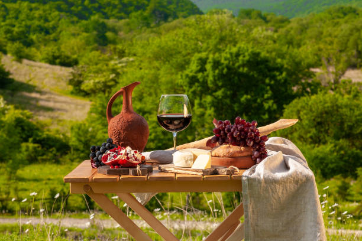
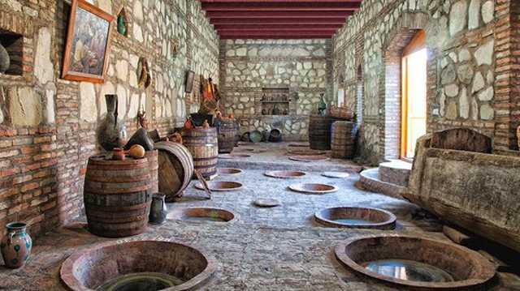

Georgia wine country, with long-lasting winemaking history, is located between Europe and Asia. The country is largely unknown (and often mistaken for the state of Georgia in the United States) but has recently gained international attention for its unique Qvevri wine. Key Archeological findings, which include material evidence of 8000-years-old traces of grape inside many ancient vessels, make Georgia wine country one of the ancients with a continuous and uninterrupted tradition of viticulture and winemaking.

UNESCO gave the status of Intangible Cultural Heritage of Humanity to the traditional Georgian method of producing wine in clay pitchers, called qvevri. The county continues to use this technique in wine production, the result being unique wines with rich and exquisite tastes that attract visitors the world over. There are more than 500 grape varieties in Georgia. The most famous one is Saperavi, which produces red dry and semi-sweet wines such as Saperavi, Mukuzani and the king of Georgian wines, Kindzmarauli. Delicious white wines are produced from Rkatsiketli, Mtsvane and Kisi grapes.

Today, wine country Georgia is home to 525 indigenous grape varieties and they still make wine with the traditional method in Qvevri – a traditional egg-shaped clay vessel. However, the classical European winemaking technique has also been practised in different Georgian wine regions since the 1830s, when Prince Alexandre Chavchavadze introduced this method. This is when some European style wine cellars were established around the country.